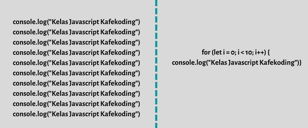

Looping/Perulangan
Looping atau yang lebih dikenal dengan perulangan adalah suatu metode dalam pemrograman untuk meng eksekusi suatu berintah yang sama terus-menerus hingga kondisi tertentu terpenuhi.
Kenapa harus menggunakan looping/perulangan?

Ketika programmer membuat program looping maka akan menjadikan script yang harus ditulis sebanyak puluhan atau ratusan baris menjadi hanya beberapa baris saja. Menggunakan looping berarti membuat sesuatu yang dapat menghasilkan banyak output dengan minimal script.
Secara umum, perulangan ini dibagi dua, yaitu :
Pada kesempatan kali ini, kita hanya akan mempelajari tentang perulangan For, While dan Do While
Perulangan For
Perulangan for merupakan perulangan yang termasuk dalam counted loop, karena sudah jelas berapa kali ia akan mengulang. Contoh kodenya sebagai berikut :
for(let i = 0; i < 10; i++){
console.log("Perulangan ke-" + i )
}
Yang perlu diperhatikan adalah kondisi yang ada di dalam kurung setelah kata for. Kondisi ini akan menentukan :
Variabel i pada perulangan for berfungsi untuk menyimpan nilai hitungan. Jadi setiap perulangan dilakukan nilai i akan selalu bertambah satu. Karena kita menentukannya di bagian i++. Bila ingin merubah kelipatan nilai hitungan, maka kita bisa menyesuaikan bagian belakang dari i++ sesuai dengan kelipatan yang diinginkan. Misal nilai yang diinginkan berupa kelipatan 3, maka kita buat menjadi i+3.
for(let i = 0; i < 30; i+3){
console.log(“Perulangan ke-" + i)
}
Bagaimana kalau nilai perulangannya dimulai dari angka yang lebih besar sampai yang ke paling kecil? Ini biasanya kita buat saat ingin menghitung mundur…
Caranya gampang. kita tinggal isi nilai a dengan nilai terbesarnya. Misalnya kita akan mulai hitungan dari 10 sampai ke 0. Maka nilai i nya, kita isi awalnya dengan 10. Lalu di kondisi perbandingannya, kita berikan i > 0. Artinya perulangan akan dilakukan selama nilai i lebih besar dari 0. Lalu kita kurangi (-1) nilai counter di setiap perulangan (i--).
for(let i = 10; i > 0; i--){
console.log("Perulangan ke-" + i)
}
Bila ingin menyesuaikan kelipatan nilainya, sama seperti di nilai perulangan yang dimulai dari angka yang lebih kecil ke angka yang lebih besar, kita bisa menyesuaikan bagian belakang dari i-- sesuai dengan kelipatan yang diinginkan. Misal nilai yang diinginkan berupa kelipatan 3, maka kita buat menjadi i-3.
for(let i = 30; i > 0; i-3){
console.log("Perulangan ke-" + i)
}
Mengapa tidak sampai nol (0)?
Karena kondisi yang kita berikan i > 0. Apabila i bernilai 0, maka kondisi ini akan menjadi false. Bila ingin mendapatkan hasil nilai 0 juga, maka kita perlu menggunakan operator >= agar kondisi nilai 0 yang ada pada i menjadi true. Hal ini juga berlaku pada perulangan While dan Do While.
Perulangan While
Perulangan while merupakan perulangan yang termasuk dalam perulangan uncounted loop. Contoh kode nya seperti berikut :
i = 0;
while (I < 10){
console.log("Perulangan ke-" + i);i++
}
Bila ingin mendapatkan nilai perulangannya dimulai dari angka yang lebih besar sampai yang ke paling kecil, maka contoh kode nya sebagai berikut :
i = 10;
while (i > 0){
console.log("Perulangan ke-" + i);i--
}
Jika ingin menyesuaikan kelipatan nilainya, sama seperti perulangan for, kita bisa menyesuaikan bagian belakang dari i++/i-- sesuai dengan kelipatan yang diinginkan. Misal nilai yang diinginkan berupa kelipatan 3, maka kita buat menjadi i+3/i-3.
Perulangan Do While
Perulangan do/while sama seperti perulangan while, sama-sama perulangan uncounted loop. Lalu, dimanakah perbedaan diantara dua jenis perulangan ini?
Perbedaannya:
Perulangan do/while akan melakukan perulangan sebanyak 1 kali terlebih dahulu, lalu mengecek kondisi yang ada di dalam kurung while.
Contoh kode nya seperti berikut :
i = 0;
do{
console.log("Perulangan ke-" + i);i++
}while(i < 10)
Bila ingin mendapatkan nilai perulangannya dimulai dari angka yang lebih besar sampai yang ke paling kecil, maka contoh kode nya sebagai berikut :
i=10;
do{
console.log("Perulangan ke-" + i);i--
}while(I > 0)
Jika ingin menyesuaikan kelipatan nilainya, sama seperti perulangan for, kita bisa menyesuaikan bagian belakang dari i++/i-- sesuai dengan kelipatan yang diinginkan. Misal nilai yang diinginkan berupa kelipatan 3, maka kita buat menjadi i+3/i-3.